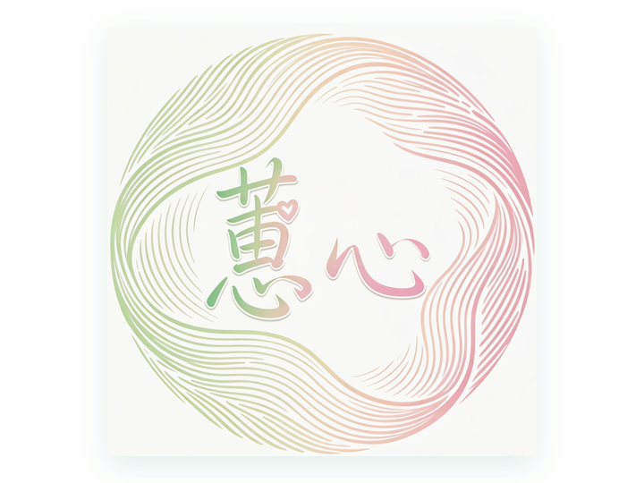

情绪识别
从文字日记、情绪标签、身体感受三类输入中识别焦虑、低落、烦躁、平静等情绪类型，并判断负面情绪是否过多。
蕙心网 · HUIXIN HEALTH
蕙心网把「情绪识别 → 情绪趋势预测 → 健康风险分级 → 分级干预」的完整护理链条做成了可交互的自评， 同时提供系统的生理知识科普与周期记录工具。所有内容用于健康教育，不替代医生的诊断与治疗。

核心功能一
系统先做快速情绪识别，再结合健康特征做情绪趋势预测； 对持续／重度的情绪困扰生成健康风险评估报告，并按分级给出正念冥想、情绪安抚、心理支持与健康祝福。
从文字日记、情绪标签、身体感受三类输入中识别焦虑、低落、烦躁、平静等情绪类型，并判断负面情绪是否过多。
结合周期阶段、睡眠、疼痛等健康特征匹配，预测情绪是偶发波动，还是持续低落、伤心、焦虑等负面情绪类型。
当情绪重度异常时生成健康风险评估报告，明确建议层级：正念冥想、情绪安抚、心理咨询推荐与优惠券等支持资源。
共 4 步，约 2 分钟；自评与日记的详细内容保存在本地，登录后仅同步汇总结果到云端。
轻量记录每天的情绪、身体与生活状态；详细内容仅保存在本地，登录后云端只同步评分等汇总数据。
每次自评完成后自动保存在本浏览器，最多保留最近 30 次，不上传服务器。
还没有自评记录。完成一次情绪自评后，这里会出现痛苦与情绪趋势曲线和历史记录。
来自每日日记的情绪评分曲线（本地 + 云端汇总合并）。
还没有日记记录。点击上方「写日记」记录今天，登录后趋势可跨设备查看。
未登录也可以完成情绪自评、浏览生理知识科普；登录账号后才能查看历史自评记录与痛苦情绪趋势曲线。
核心功能二
从月经周期四个阶段的激素变化，到经期护理、营养运动、常见误区与就医指征，共 9 个分类。 支持关键词搜索与按分类筛选，每条知识都可打开详读。
没有匹配的知识条目，换个关键词试试。
中医古法健身
八段锦、五禽戏、经络拍打等古法健身方式，适合经期与日常温和调理。 打卡记录仅保存在本地浏览器，不上传服务器。
点击「今日打卡」记录练习，最近 7 天打卡情况会显示在卡片下方。
管理后台
仅管理员可见：审核用户投稿、管理科普卡片、查看用户列表、用户反馈与点击量统计。
实用工具
记录每次月经开始日期，自动推算下次经期、排卵期与 PMS 情绪易波动窗口。
还没有记录，先录入一次月经开始日期吧。
逐项对照，任何一项长期异常都建议到妇科门诊评估。
关于蕙心网
蕙心网是一个面向女性经期健康的护理与科普平台。我们把临床常见的经期照护逻辑整理成两个核心功能： 核心功能一用交互流程完成情绪识别、趋势预测与风险分级干预；核心功能二用系统化科普回答「为什么会这样、我该怎么做」。 所有建议都基于公开的妇科与心理健康科普共识整理，不构成医疗诊断。
本次冥想感受如何？详细内容仅保存在本地，云端只同步模式、时长与放松评分。